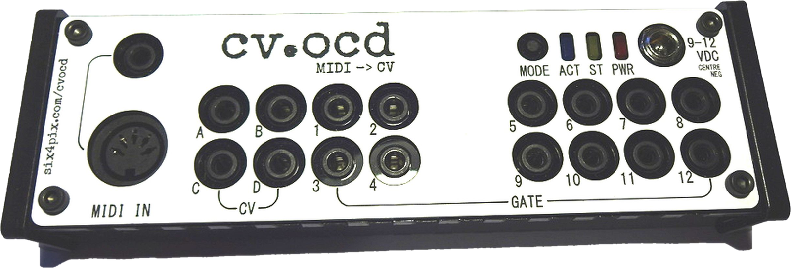

    <header class="page-heading">
      <h1 class="page-heading__title">cv<span class="dot">.</span>ocd</h1>
      <h2 class="page-heading__subtitle"><span class="prompt" aria-hidden="true">&gt;</span> sysex patch builder</h2>
    </header>
    <figure class="module-shot">
      <picture>
        <source srcset="img/cvocd.webp" type="image/webp">
        
      </picture>
    </figure>
